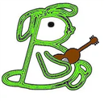

Břevnovský Březňák
O festivalu
Břevnovský Březňák je festival konající se dvakrát ročně - na jaře a na podzim
- na Malém Břevnově.
Přijďte, hrají u nás hvězdy i nováčci folkové, trempské a bluegrassové scény.
Každý ročník zakončuje jam-session, na kterém si zahrají návštěvníci se
skutečnými profíky.
XVIII. Břevnovský Březňák, 21. října 2023, 18:00
Předběžně:
Změna programu vyhrazena.
Kudy kam
Kulturní dům Bílá Hora
Ke Kulturnímu domu 14
163 00 Praha 6 – Řepy
Nejsnáze se k nám dostanete tramvají 22 či 25 do zastávky Bílá Hora. Tato
konečná tramvaje je od kulturního domu vzdálená asi 500 metrů. Když vystoupíte z
tramvaje, vydáte se na nejbližší přechod přes hlavní, který je na druhé straně
točny tramvají. Přejdete, půjdete dál směrem z města, dáte se po pěší cestě
přes malou loučku. Pak se dáte rovně, a nakonec zahnete třetí ulici doprava.
Na rohu už uvidíte KD Bílá Hora. Do zastávky Bílá Hora jezdí také autobus 164,
168 a 347. Domů se dostanete i v noci tramvají 97.
Rezervace lístků
Pro rezervaci lístků nás kontaktujte nás na e-mailu
bbfest@seznam.cz
nebo na telefonu
736 227 646.
Cena lístku je 390 korun, je možné uplatnit individuální slevu pro studenty a
děti. Děti do 5 let neplatí. Své lístky si vyzvednete až na místě u pokladny.
Kontakt
Uplynulé ročníky
XVII. Břevnovský Březňák 18. března 2023
- Falešná Karta
- Saša Niklíčková
- Choroši
- Brzdaři
XVI. Břevnovský Březňák 22. října 2022
- Sunny Side
- Choroši
- Lucie Dolejšová, Jana Rychterová, Franta Vlček
- Pacifik
XV. Břevnovský Březňák 19. března 2022
- Pacifik
- Jitka Vrbová
- Slávek Janoušek s kapelou
- Choroši
- VilMa
XIV. Břevnovský Březňák 23. října 2021
- Choroši
- Hop a Šavani
- Faux Pase Fonet
- Sunny Side
XIII. Břevnovský Březňák 21. března 2020
- Epydemye
- Jana Rychterová a spol.
- Načas
- Eliška Kotlínová
XII. Břevnovský Březňák 19. října 2019
- Hop a Šavani
- Gladly SW
- Terrakota
- Pavel Čadek
- Joe Robinson, Standa Barek
XI. Břevnovský Březňák 23. března 2019
- Jan Matěj Rak, Franta Vlček
- Pacifik
- Choroši
- Jitka Vrbová, Honza Früwirth
X. Břevnovský Březňák 20. října 2018
- Terrakota
- Martin Rous
- Hobboes Revival Alva
- Spirituál Kvintet
IX. Břevnovský Březňák 24. března 2018
- Robert Křesťan a Trapeři
- Choroši
- Pětník
- Terrakota
VIII. Břevnovský Březňák 21. října 2017
- Láďa Zítka
- Slávek Maděra
- Sekvoj
- Poutníci
- Jak je neznáte
VII. Břevnovský Březňák březen 2017
- Sekvoj
- Sabina Uxová
- Martin Rous
- Pacifik
- Nové Struny
VI. Břevnovský Březňák 22. října 2016
- Stráníci
- Flastr
- Pepa Štross
- Sekvoj
V. Břevnovský Březňák 19. března 2016
- Sekvoj
- Jitka Vrbová a Honza Früwirth
- Brzdaři
- Honza Jícha
IV. Břevnovský Březňák 24. října 2015
- Sekvoj
- Isara
- Alternativa
- Standa Haláček
III. Břevnovský Březňák 28. února 2015
- Sekvoj
- Jan Matěj Rak a Franta Vlček
- Tomáš Berka a Corpus Delicti
- Burizon
II. Břevnovský Březňák 18. října 2014
- Sekvoj
- Disneyband
- Bodlo
- EKG-M
I. Břevnovský Březňák 22. března 2014
- Sekvoj
- František Vlček
- Veget
- Hluboké nedorozumění
© 2014 - 2023 Břevnovský Březňák